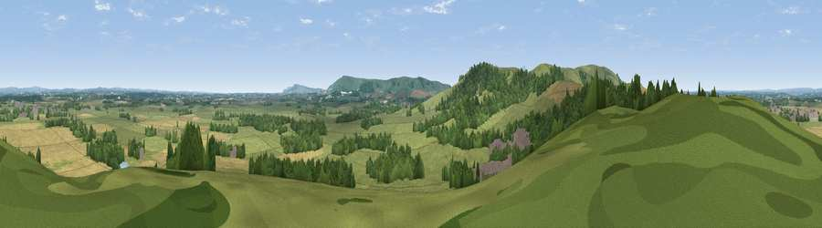

Viewpoint near Ringmer
#15130 in England · top 29% of its area beats it · near RingmerWhere it is
The exact computed spot (TQ 45625 11125). Click the marker for map links.
The view, rendered

A 360° render of this exact spot computed from the terrain model, tree cover and land cover — summer colours, afternoon light, calibrated against photographs of famous viewpoints. Real trees, hedges and buildings will differ in detail.
The panorama
Grey silhouette: terrain skyline in each direction (720 bearings, Earth curvature and refraction included). Dashed green: skyline with trees (+15 m) and buildings (+8 m) as obstacles. Blue strip: how far the ground is visible on each bearing.
Where the view opens
Wedge length = distance to the farthest visible ground on that bearing (vegetation-aware). Rings at 10, 25 and 50 km.
What fills the view
46% grassland · 30% cropland · 22% woodland · 2% built-up
Angular shares of the visible panorama (visual magnitude), not map area. Landscape diversity 0.50 (0–1 Shannon).
Key numbers
More beautiful places nearby
The staircase of upgrades: each row has a higher view potential than everything closer. Driving times are estimates from straight-line distance, calibrated against real road routing — check an actual route before setting out.
| Place | Direction | Drive | Score |
|---|---|---|---|
| Viewpoint near Glynde | WSW · 1 km | ~4 min | 70.8 |
| Cliffe Hill | W · 2 km | ~6 min | 79.3 |
| Viewpoint near Firle | S · 5 km | ~11 min | 83.8 |
| Viewpoint near Firle | SSE · 6 km | ~12 min | 85.4 |
| Firle Beacon | SSE · 6 km | ~13 min | 88.9 |
| Viewpoint near Niton | WSW · 102 km | ~127 min | 89.2 |
| Viewpoint near West Bexington | W · 192 km | ~211 min | 89.5 |
| The Knoll | W · 193 km | ~212 min | 91.0 |
50.88127, 0.06871 · source: screening · position refined by local search. Computed location — check access rights before visiting.